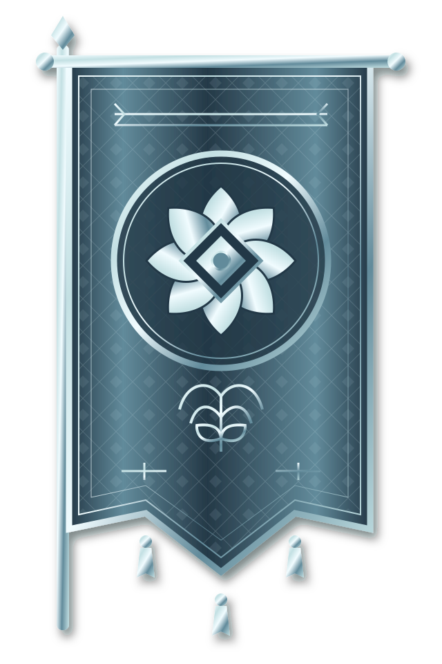
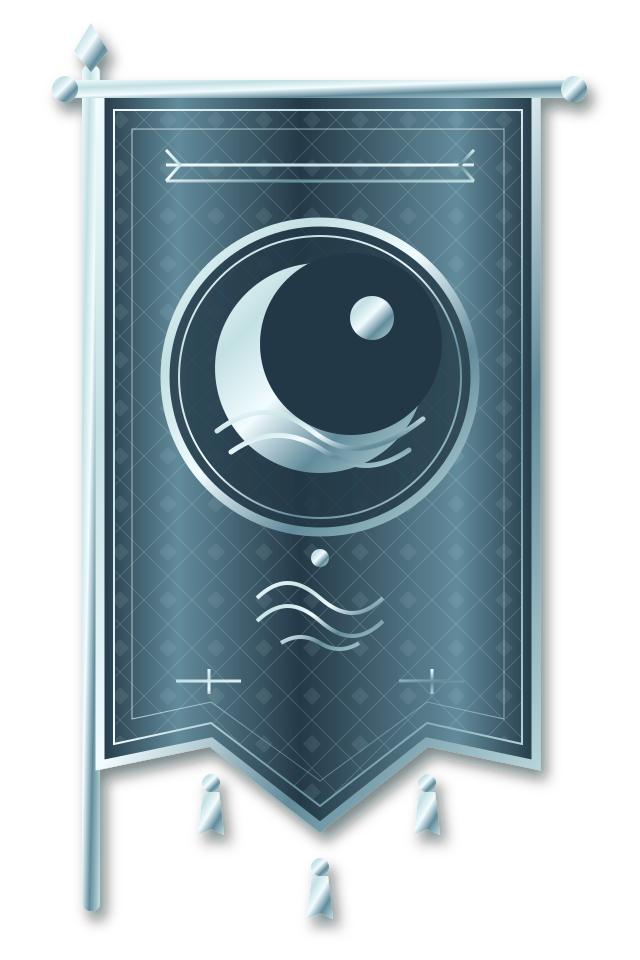
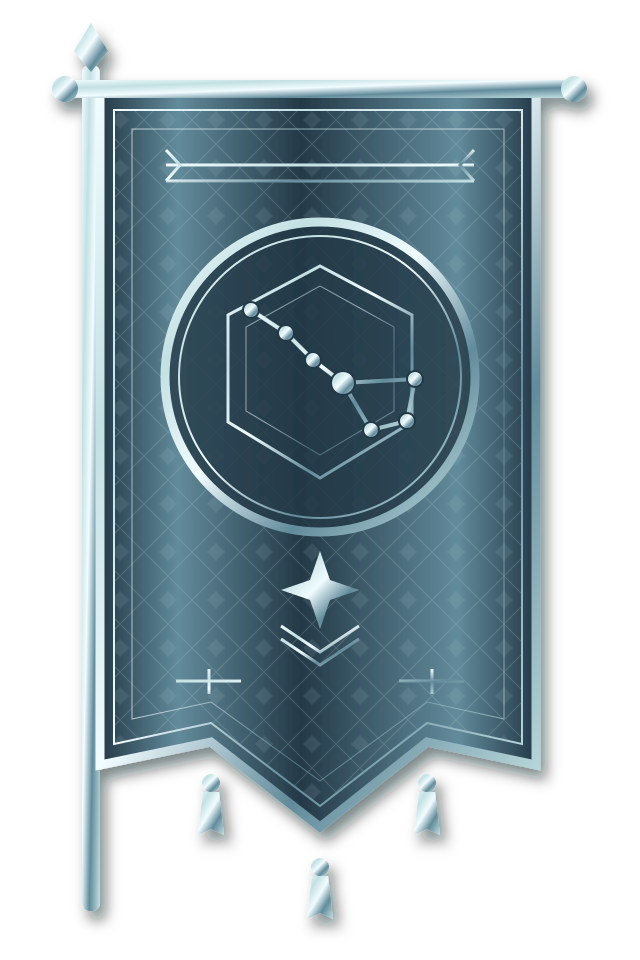
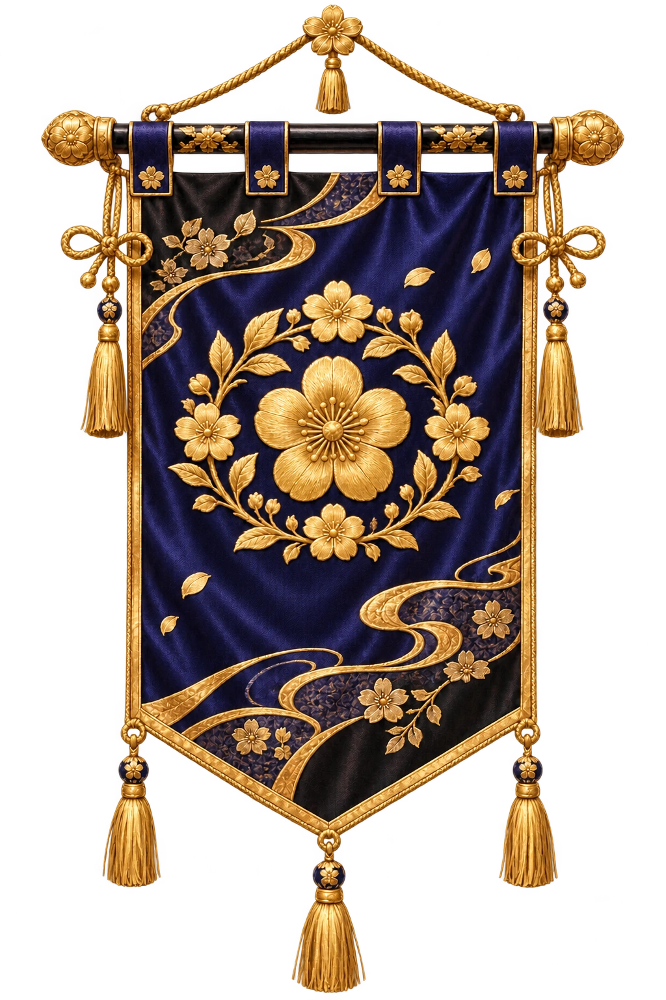
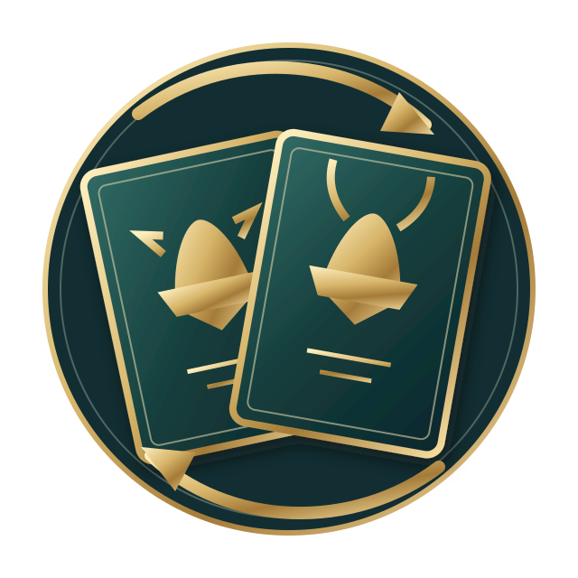
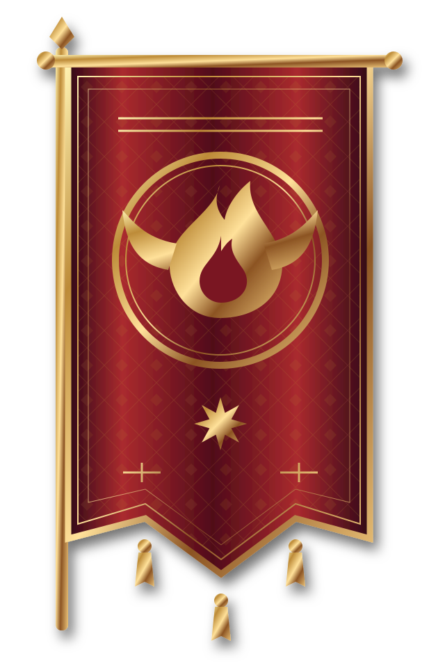
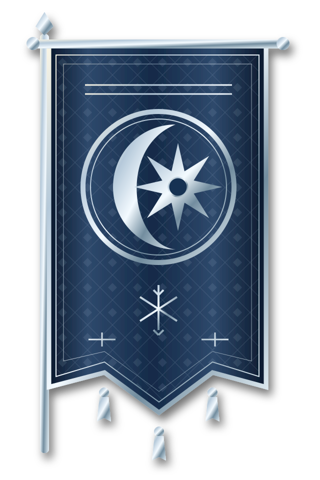
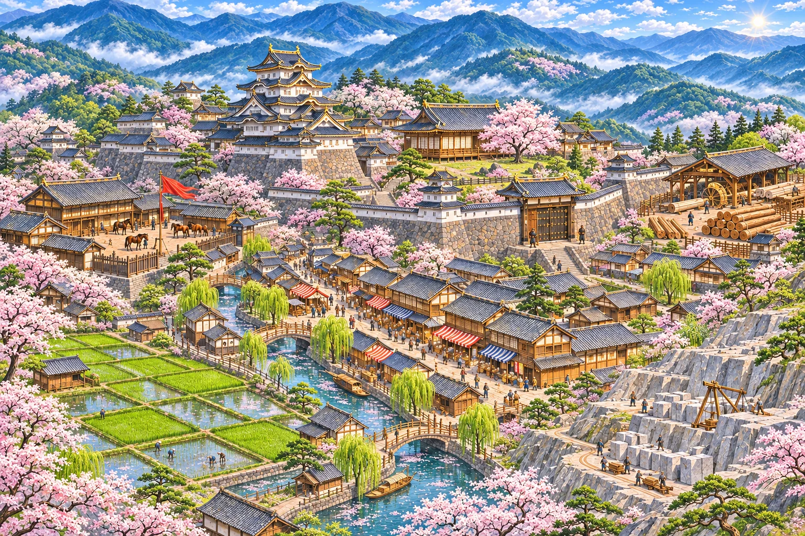

霜華 花菱の旗印
あなたの一城
重なり合う花菱と細い唐草で仕立てた旗印。11月の「霜華」配色で、領主名も彩ります。
対象の支払い期間で選べる外観の見本です。

購入・外観の適用はゲーム内で行います。見本はどなたでも切り替えられます。
サポーターの選べる永久外観
支払い完了を確認した各利用期間につき、好きな旗印と名札を1種、確定で受け取れます。選んだ外観は解約後も残ります。12か月の季節配色が毎年巡ります。
選択を確定すると、その支払い期間の外観は変更できません。未選択の過去の支払い期間も、ここから受け取れます。
2026年11月の配色例

あなたの一城
重なり合う花菱と細い唐草で仕立てた旗印。11月の「霜華」配色で、領主名も彩ります。
対象の支払い期間で選べる外観の見本です。

あなたの一城
満ちる月と重なる波紋で仕立てた旗印。11月の「霜華」配色で、領主名も彩ります。
対象の支払い期間で選べる外観の見本です。

あなたの一城
七つの星と幾何学の組紐で仕立てた旗印。11月の「霜華」配色で、領主名も彩ります。
対象の支払い期間で選べる外観の見本です。
同じ素材を、ゲームの装いに
この下の切り替えは、カタログの見本だけに反映されます。
 プレビュー
プレビュー
月明かり、窓の灯り、川面の反射まで描いた完成背景です。施設の配置と操作は通常の城下町と同じです。
画像は実際に使われる素材です。プレビューを選んでも所持や装備の状態は変わりません。
外観は買い切り、サポーターは月額780円。再抽選パスは480円で実時間30日間、自動更新なしです。
買い切りの外観アイテム
深い藍の絹に金の花を織り込んだ旗印と、重厚な金彩の名札。あなたの一城を、凛とした装いに。
480円税込・買い切り
外観の特典です。武将の能力や資産を追加しません。同じ領主で利用できます。別の領主への譲渡・交易はできません。
受け取る領主をゲーム内で確認してから、購入手続きへ進みます。
買い切りの外観アイテム
藍の空に月が昇り、城の窓と灯籠が水面を照らす。育てた城下町を、穏やかな夜の景色へ。
980円税込・買い切り
外観の特典です。武将の能力や資産を追加しません。同じ領主で利用できます。別の領主への譲渡・交易はできません。
受け取る領主をゲーム内で確認してから、購入手続きへ進みます。
月額の継続支援・毎支払い期間に選べる外観
月額780円で戦国VSを継続支援。利用中のバッジに加え、支払いが完了した各利用期間に、季節の旗印と名札を3種から1種選べます。
780円 / 月税込・自動更新
外観の特典です。武将の能力や資産を追加しません。同じ領主で利用できます。別の領主への譲渡・交易はできません。
月額780円（税込）で自動更新します。支払いが完了した各利用期間に、3種から1種の外観を確定で選べます。解約手続きをすると現在の利用期間の末日で終了し、期間終了までバッジを利用できます。選んだ外観は解約後も所持・装備できます。
受け取る領主をゲーム内で確認してから、購入手続きへ進みます。

30日間の再抽選特典・自動更新なし
購入反映から実時間30日間、勾玉で1人招集した武将を1日3回まで再抽選。元の武将と新しい武将を見比べて、1人を選べます。
480円 / 30日税込・実時間30日・更新なし
武将の獲得結果に影響する有料特典です。
通常の1人招集には勾玉が必要です。再抽選では追加の勾玉を消費しません。排出率は通常の1人招集と同じで、希望の武将や高レアリティを保証しません。同じ領主で利用できます。別の領主への譲渡・交易はできません。
480円（税込）、購入反映から実時間30日間。自動更新はありません。1人招集の結果を1日3回まで、同じ結果につき1回だけ再抽選し、元の武将と新しい武将から1人を選びます。10人招集は対象外です。回数は毎日05:00（日本時間）に更新され、繰り越されません。有効期間中は追加購入できません。
受け取る領主をゲーム内で確認してから、購入手続きへ進みます。

買い切りの外観アイテム
朱漆の赤に、金の火輪と翼を重ねた旗印。赤銅の縁を施した領主名で、出陣の気概を表します。
580円税込・買い切り
外観の特典です。武将の能力や資産を追加しません。同じ領主で利用できます。別の領主への譲渡・交易はできません。
受け取る領主をゲーム内で確認してから、購入手続きへ進みます。

買い切りの外観アイテム
凛とした藍の地に、銀の月輪と結晶を配した旗印。白銀の輝きをまとい、領主名を端正に彩ります。
580円税込・買い切り
外観の特典です。武将の能力や資産を追加しません。同じ領主で利用できます。別の領主への譲渡・交易はできません。
受け取る領主をゲーム内で確認してから、購入手続きへ進みます。
買い切りの外観アイテム
左右に翼を広げた鳳凰と、朱の宝玉を重ねた勲章。領主名の横に飾れる、買い切りの装飾バッジです。
780円税込・買い切り
外観の特典です。武将の能力や資産を追加しません。同じ領主で利用できます。別の領主への譲渡・交易はできません。
受け取る領主をゲーム内で確認してから、購入手続きへ進みます。

買い切りの外観アイテム
城を包む淡い桜と、春の光にきらめく川。育てた城下町を、桜雲がたなびく春景色に着せ替えます。
980円税込・買い切り
外観の特典です。武将の能力や資産を追加しません。同じ領主で利用できます。別の領主への譲渡・交易はできません。
受け取る領主をゲーム内で確認してから、購入手続きへ進みます。
買い切りの外観アイテム
白雪をいただく屋根と山並み、澄んだ冬の空気。日々の内政を、静かな雪景色の城下町で楽しめます。
980円税込・買い切り
外観の特典です。武将の能力や資産を追加しません。同じ領主で利用できます。別の領主への譲渡・交易はできません。
受け取る領主をゲーム内で確認してから、購入手続きへ進みます。
買い切りの外観アイテム
あなたの城を、その城ならではの景観へ。一般123城の専用イラストをまとめて使える買い切り外観です。城下町・天下地図・出陣・公開プロフィールにも反映され、他のプレイヤーからも同じ景観が見えます。
980円税込・買い切り
外観の特典です。武将の能力や資産を追加しません。同じ領主で利用できます。別の領主への譲渡・交易はできません。
受け取る領主をゲーム内で確認してから、購入手続きへ進みます。
外観・サポーターは装いの特典です。再抽選パスには、武将の獲得結果に影響する有料特典があります。
| できること | 無料プレイ | 外観・サポーター | 再抽選パス |
|---|---|---|---|
| 城下町・武将・合戦・交易 | 遊べます | 遊べます | 遊べます |
| 城下町や領主表示の外観 | 通常の外観 | 購入・受け取り済みの装い | 外観は含みません |
| 支払済み期間の選べる永久外観 | なし | サポーターは3種から1種 | 含みません |
| 勾玉による1人招集の再抽選 | なし | 含みません | 1日3回・元の武将との選択可 |
| 勾玉・資産の直接購入 | なし | なし | なし |
勾玉そのものは販売しません。再抽選は通常の1人招集と同じ排出率で、希望の武将や高レアリティは保証しません。有料商品の交易・譲渡はできません。
一般123城の専用景観を、城主の城下町・天下地図・城詳細・出陣と公開プロフィールに表示します。他のプレイヤーや同じ城の家臣にも、城主が適用した景観が見えます。税込980円の買い切りで、同じ領主なら本拠移転後も買い直しは不要です。各城を題材にしたゲーム用イラストで、建物の時代・復元表現には創作を含みます。
ゲーム内の「保存・設定」から「有料版・支援」を開き、接続中の領主名・IDと商品を確認して購入画面へ進みます。購入手続きはStripeの画面で行います。通信や購入サービスを確認できない間は、購入ボタンを利用できません。
ゲームへ戻り、「購入状態を再確認」を押してください。受け取りを確認すると、商品に「ゲームに適用」が表示されます。外観を元に戻すときは「通常に戻す」を選びます。購入画面から戻っただけで、未確認の権利が付くことはありません。
月額780円（税込）で自動更新します。支払いが完了した各利用期間に、3種から1種の外観を確定で選べます。解約手続きをすると現在の利用期間の末日で終了し、期間終了までバッジを利用できます。選んだ外観は解約後も所持・装備できます。「支援の契約・解約を確認」から手続きできます。期間終了後はバッジが表示されなくなり、受け取り済みの支援特典と買い切りの外観は引き続き使えます。
480円（税込）、購入反映から実時間30日間。自動更新はありません。1人招集の結果を1日3回まで、同じ結果につき1回だけ再抽選し、元の武将と新しい武将から1人を選びます。10人招集は対象外です。回数は毎日05:00（日本時間）に更新され、繰り越されません。有効期間中は追加購入できません。利用中は重ねて購入できません。「武将招集」で1人招集した後に、再抽選するか、そのままの武将を迎えるかを選べます。パスの期限はゲームの速度設定やログイン日数にかかわらず進みます。
カタログの見本だけが切り替わります。ゲームへの適用は、購入状態を確認した後の別の操作です。見本の選択で資産やプレイ記録が変わることはありません。
再抽選パスは武将の1人招集を引き直し、元と新しい武将を見比べて選べるため、獲得結果に影響します。外観アイテムとサポーターの特典は装飾です。勾玉・資産の直接販売や、武将能力・生産量・指令回復への倍率は含みません。
自分らしい一城を楽しみながら、戦国VSのこれからを応援できます。